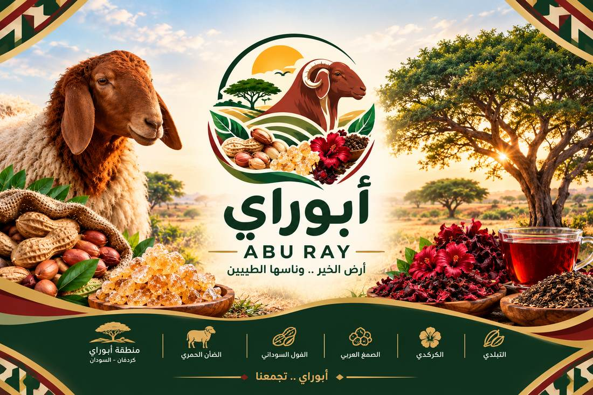
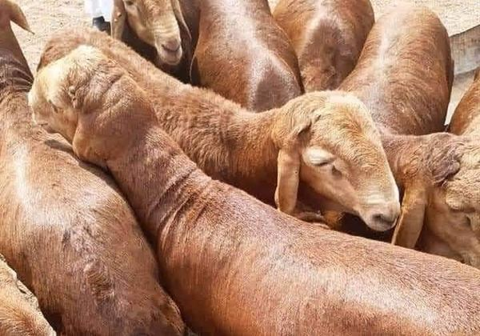
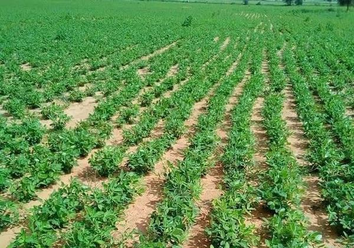
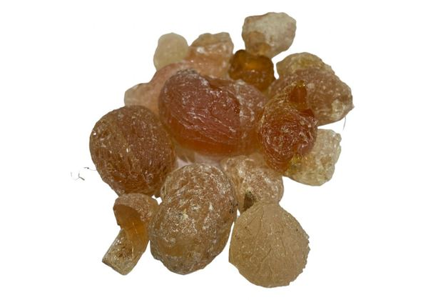
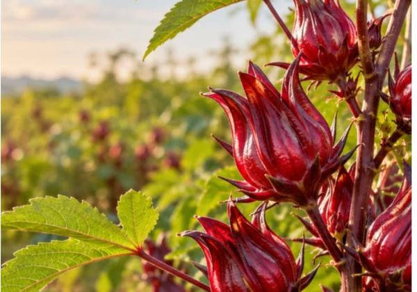
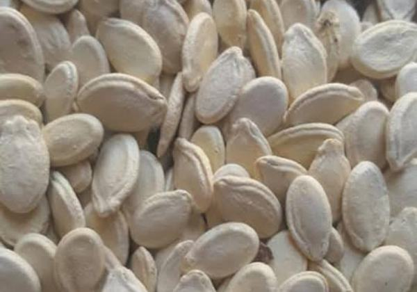
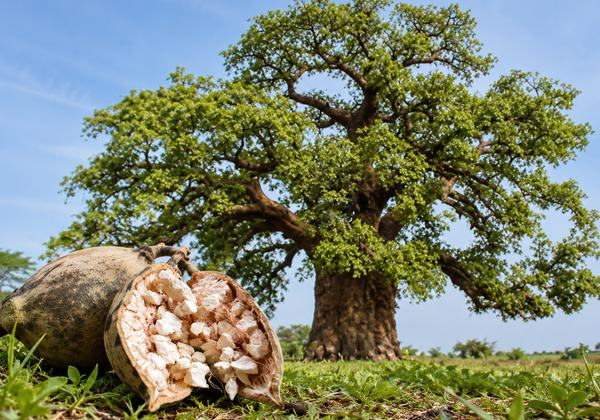

الأعمال الاجتماعية
مبادرات يقودها أبناء الإدارية لخدمة القرى ودعم أهلها.
غرب كردفان · السودان
دليل تجريبي لقرى غرب كردفان، بين النهود وغبيش. هنا يلتقي شباب الإدارية في الأعمال الاجتماعية والثقافية والرياضية.

عن الإدارية
إدارية أبوراي في ولاية غرب كردفان. هذا الدليل في مرحلة التجربة وجمع المعلومات. تبعد نحو 70 كم غرب مدينة النهود، ونحو 65 كم شرق مدينة غبيش. هذا الموقع يجمع الهوية والمعلومة والذاكرة في مساحة واحدة.
الموقع
مخطط تقريبي للمسافات، يقرّب المكان لمن لم يزره بعد.
دليل القرى
ابحث عن قريتك
واكتشف ما نعرفه عنها
لم نجد قرية بهذا الاسم. جرّب كتابة جزء من الاسم.
ذاكرة أبوراي
ساعدنا في حصر وتوثيق بيانات القرى والخدمات والسكان. اترك المعلومات التي لا تعرفها فارغة، ولا تضع تقديرات على أنها أرقام رسمية.
ساهم في توثيق قريتك ↗بيانات الاسم ورقم الهاتف تُستخدم للتوثيق الداخلي ولا تُنشر على الموقع، وفق تنبيهات الاستمارة.
فتح الاستمارة مباشرة ↗المجتمع
مساحة للشباب والأهل، تجمع المبادرات الاجتماعية والثقافية والرياضية التي تجعل أبوراي أقرب.
مبادرات يقودها أبناء الإدارية لخدمة القرى ودعم أهلها.
حفظ الحكايات والمنتجات والعادات التي تمنح المكان روحه.
مساحة لقاء وتعاون، لأن المجتمع القوي يبدأ من شبابه.
المعرض
من الفول السوداني والكركدي إلى الضأن الحمري والصمغ العربي؛ تفاصيل صغيرة تحكي أبوراي.






مساحتنا المشتركة
أسرع طريق للتواصل هو واتساب. وللأخبار والنقاشات انضم إلى المجموعة على فيسبوك.